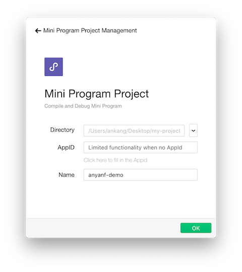
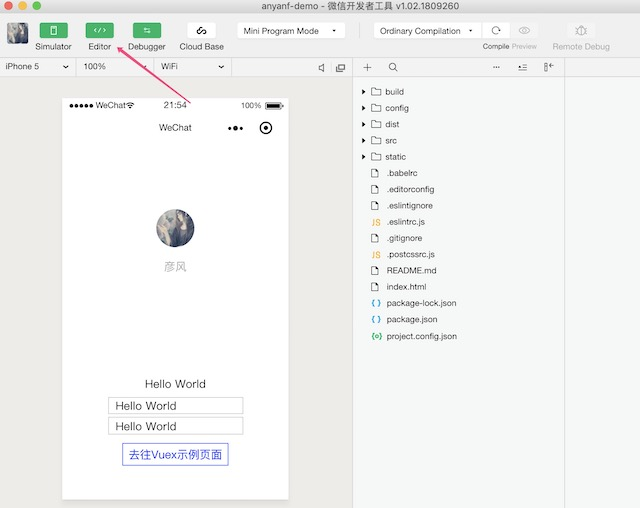

小程序出来也有一段时间里，事实证明的确方便了很多，同事说用 mpvue写起来比较方便，就试了一下。
mpvue （github 地址请参见）是一个使用 Vue.js 开发小程序的前端框架。框架基于 Vue.js 核心，mpvue 修改了 Vue.js的 runtime 和 compiler 实现，使其可以运行在小程序环境中，从而为小程序开发引入了整套 Vue.js 开发体验。
环境搭建
安装 Node.js
现在前端开发基本上是离不开Node的，所以需要先安装一下Node.js。Mac用户可以直接用HomeBrew安装，下面讲一下Mac的安装方式，其他系统请下载nodejs并安装。
$ brew install node
通过brew安装到最后可能在brew link node阶段有权限问题，如果没有遇到请直接到下一步，若遇到
Error: The `brew link` step did not complete successfully
The formula built, but is not symlinked into /usr/local
Could not symlink include/node
/usr/local/include is not writable.
这样的错误，先看一下是否存在/usr/local/include文件夹，如果没有这个文件夹，创建一个
$ sudo mkdir /usr/local/include
创建完后授权
$ sudo chown -R `whoami`:admin /usr/local/include
最后 link node
$ brew link node
检查一下是否安装成功
$ node -v
v10.11.0
$ npm -v
6.4.1
到此node安装完毕了，如果遇到其他问题，请留言交流。
对了，由于众所周知的原因，node官方的源基本上是无法访问的，所以这样切换成淘宝的源比较合适
$ npm set registry https://registry.npm.taobao.org/
全局安装 vue-cli
通过npm安装vue-cli，一般是要 sudo 权限的。
$ npm install --global vue-cli@2.9
创建项目
创建一个基于 mpvue-quickstart 模板的新项目
$ vue init mpvue/mpvue-quickstart my-project
会让填写一些项目，如果不确定的话，可以一路回车
? Project name anyanf-demo
? wxmp appid touristappid
? Project description demo
? Author anyanf
? Vue build runtime
? Use Vuex? Yes
? Use ESLint to lint your code? Yes
? Pick an ESLint preset Standard
? 小程序测试，敬请关注最新微信开发者工具的“测试报告”功能
vue-cli · Generated "my-project".
To get started:
cd my-project
npm install
npm run dev
Documentation can be found at http://mpvue.com
项目这就创建好了，进入项目文件夹安装依赖
$ cd my-project
$ npm install
npm WARN deprecated bfj-node4@5.3.1: Switch to the `bfj` package for fixes and new features!
npm WARN deprecated browserslist@1.7.7: Browserslist 2 could fail on reading Browserslist >3.0 config used in other tools.
npm WARN deprecated graceful-fs@3.0.11: please upgrade to graceful-fs 4 for compatibility with current and future versions of Node.js
> fsevents@1.2.4 install /Users/ankang/Desktop/my-project/node_modules/fsevents
> node install
[fsevents] Success: "/Users/ankang/Desktop/my-project/node_modules/fsevents/lib/binding/Release/node-v64-darwin-x64/fse.node" already installed
Pass --update-binary to reinstall or --build-from-source to recompile
> uglifyjs-webpack-plugin@0.4.6 postinstall /Users/ankang/Desktop/my-project/node_modules/webpack/node_modules/uglifyjs-webpack-plugin
> node lib/post_install.js
npm notice created a lockfile as package-lock.json. You should commit this file.
npm WARN vue-loader@13.7.3 requires a peer of vue-template-compiler@^2.0.0 but none is installed. You must install peer dependencies yourself.
added 1040 packages from 676 contributors in 16.628s
各种依赖都安装完后，可以跑一下项目了
$ npm run dev
# 当出现这个提示的时候，说明已经跑起来项目了
DONE Compiled successfully in 1745ms
随着运行成功的回显之后，可以看到本地多了个 dist 目录，这个目录里就是生成的小程序相关代码。
此时，整个 mpvue 项目已经跑起来了。
搭建微信小程序的开发环境
这一步比较简单，按照提示一步步安装好就行，然后用微信扫描二维码登陆。 至此小程序的开发环境差不多完成。
调试开发 mpvue
打开安装好的微信开发者工具。
选择小程序项目（Mini Program Project），然后填写相关的信息：
- 项目目录（Directory）：就是刚刚创建的项目目录（非 dist目录，是项目的根目录）。
- AppID：没有的话可以点选体验“小程序”，只影响是否可以真机调试。
- 项目名称。
一般项目路径选择好后，第二三项会自动填写，如果没有或者有误的话，可自行调整。
如图所示：

点击确定按钮后会跳到正式的开发页面，点击“编辑器”按钮，关闭自带的小程序编辑器。如图：

剩下的界面就和 Chrome 的调试界面很像了。
用自己趁手的编辑器（或者IDE）打开 my-project 中的 src 目录下的代码，可以试试修改看效果。
页面都在 scr/pages中，如果在pages里添加文件夹需要在app.json中配置一下。
可以在想要打断点的位置插入debugger，在运行到这行时候，会自动断住。
注意事项
新增的页面需要重新 npm run dev 来进行编译